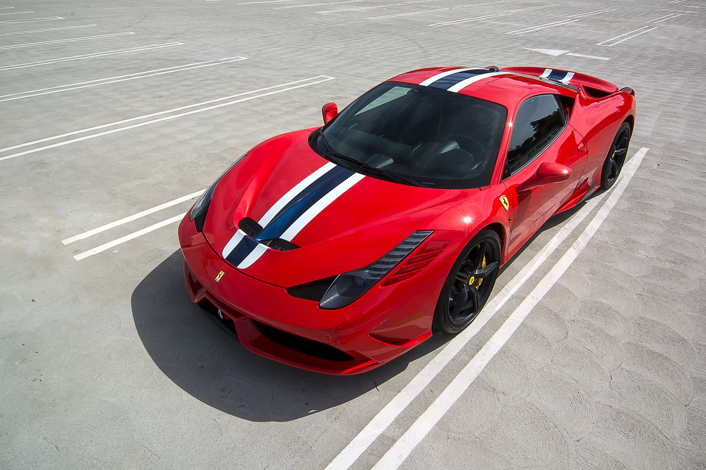
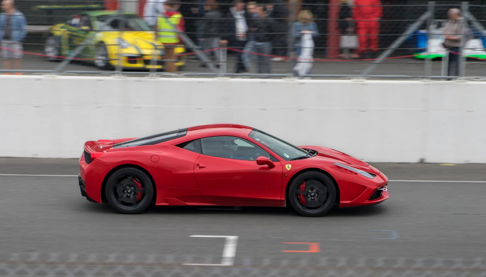

▲ 구딩 크리스티스 몬터레이 경매에 출품된 2015년식 페라리 458 스페치알레. 로소 코르사 색상에 주행거리 2,297마일의 상태 좋은 개체다
자연흡기 V8 슈퍼카의 정점으로 꼽히는 페라리 458 스페치알레 한 대가 몬터레이 카위크 기간 중 열리는 구딩 크리스티스 경매에 출품됩니다. 예상 낙찰가는 90만~120만 달러, 우리 돈으로 약 12억~16억 원 수준입니다. 출품 차량은 2015년식으로 주행거리 2,297마일에 불과한 로소 코르사 색상의 개체입니다. 불과 5년 전만 해도 약 35만 달러(약 4억7천만 원) 선에서 거래되던 모델이라는 점을 감안하면, 그야말로 가치가 폭등한 셈입니다.
1. 9,000rpm까지 회전하는 순수함
458 스페치알레의 핵심은 4.5리터 자연흡기 V8 엔진입니다. 9,000rpm까지 거침없이 회전하며 597마력, 398lb-ft의 토크를 만들어냅니다. 여기에 일반 458 대비 약 91kg을 감량한 경량화, 7단 듀얼클러치 변속기가 더해져 순수한 드라이빙 머신으로 완성됐습니다. 터보차저 없이 고회전으로 출력을 뽑아내는 이런 엔진 구성은, 이제는 배출가스 규제와 다운사이징 흐름 속에서 사실상 재현이 불가능한 방식이 됐습니다.

▲ 페라리 458 스페치알레. 4.5리터 자연흡기 V8이 9,000rpm까지 회전하며 597마력을 낸다
2. 왜 지금 가치가 폭등하나 — "더 단순했던 시대"
최근 슈퍼카 시장은 하이브리드 시스템과 터보차저, 복잡한 전자 제어 장치로 무게와 복잡성이 계속 늘어나는 추세입니다. 이런 흐름 속에서 458 스페치알레 같은 순수 자연흡기 슈퍼카는 오히려 "더 단순했던 시대"에 대한 향수를 자극하는 존재로 재평가받고 있습니다. 컬렉터들 사이에서는 터보 없이 고회전으로 뽑아내는 자연흡기 사운드와 즉각적인 스로틀 반응이 다시는 만들어질 수 없는 경험으로 인식되며, 이것이 가격 급등의 핵심 배경으로 꼽힙니다.
| 시점 | 가격대 |
|---|---|
| 약 5년 전 | 약 $350,000 (약 4억7천만 원) |
| 2026년 몬터레이 예상가 | $900,000~$1,200,000 (약 12억~16억 원) |
| 총 생산 대수 | 1,300대 이상 |
| 출품 개체 주행거리 | 2,297마일 |

▲ 458 스페치알레 후면. 일반 458 대비 약 91kg 경량화를 거쳐 순수한 드라이빙 머신으로 완성됐다
3. 페라리 자연흡기 V8의 마지막 순간들
458 스페치알레 이후 페라리의 후속 미드십 V8 라인업(488, F8 트리부토)은 모두 터보차저를 장착하며 출력과 효율을 끌어올렸습니다. 이는 458 스페치알레를 페라리 역사에서 "자연흡기 V8의 마지막 정점"이라는 상징적 위치에 올려놓았습니다. 최근 페라리가 공개한 12칠린드리 같은 신형 자연흡기 V12 모델이 여전히 사랑받는 것도 비슷한 맥락입니다. 터보 없이 고회전을 추구하는 엔진에 대한 애정이 컬렉터 시장 전반에서 뚜렷하게 나타나고 있습니다.

▲ 페라리 12칠린드리. 자연흡기 대배기량 엔진을 고수하는 최신 모델로, 458 스페치알레와 같은 맥락의 '순수함'을 계승하고 있다
4. 엔초 페라리보다 빨랐던 피오라노 랩타임
2013년 프랑크푸르트 모터쇼에서 처음 공개된 458 스페치알레는 등장과 동시에 기록을 세웠습니다. 페라리 자체 테스트 트랙인 피오라노 서킷에서 1분23초5의 랩타임을 기록했는데, 이는 당대 최고의 하이퍼카였던 엔초 페라리보다도 1.5초 빠른 수치였습니다. 리터당 135마력에 달하는 출력 밀도는 지금까지도 페라리 양산 자연흡기 엔진 중 최고 기록으로 남아있습니다. 단순히 오래된 슈퍼카가 아니라, 당시 페라리 라인업 전체를 통틀어 가장 빠른 서킷 타임을 냈던 차라는 사실이 지금의 컬렉터 가치를 뒷받침하는 배경이기도 합니다.
5. 정리 — 슈퍼카 투자 시장의 방향성
458 스페치알레의 가치 급등은 단순한 페라리 한 대의 이야기가 아니라, 슈퍼카 컬렉터 시장 전반의 흐름을 보여주는 사례입니다. 전동화와 터보차징이 대세가 될수록, 오히려 그 이전 세대의 순수 내연기관 자연흡기 모델들의 희소가치가 부각되고 있습니다. 몬터레이 카위크에서 이 차가 실제로 얼마에 낙찰될지는 아직 지켜봐야 하지만, 예상가 범위만으로도 이미 자연흡기 슈퍼카 시대의 마지막 페이지가 어떻게 평가받고 있는지를 잘 보여주고 있습니다.